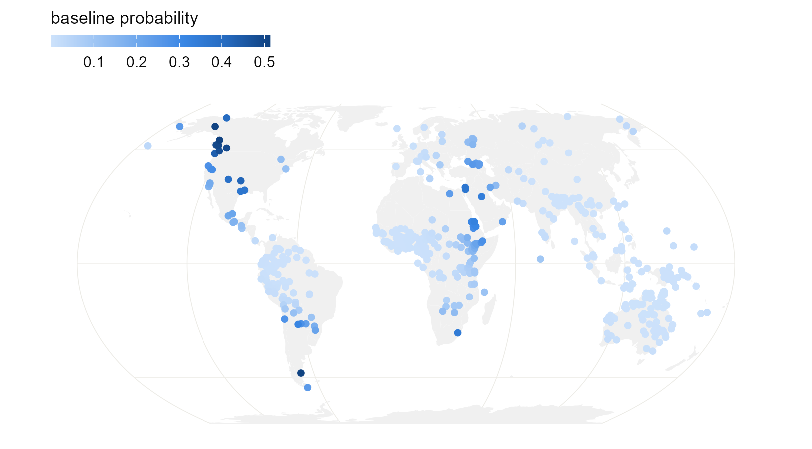
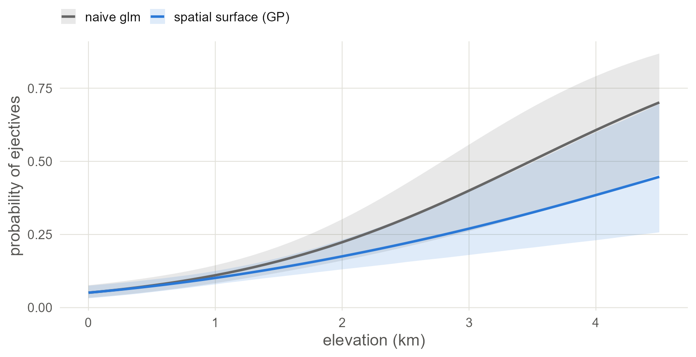

6 Space as a smooth surface
Let a Gaussian process draw a smooth surface over the map, so that nearby languages are pulled towards the same baseline.
6.1 Set up
library(ape)
library(brms)
library(sf)
library(spdep)
library(rnaturalearth)
library(ggplot2)
base <- "https://rehan-muh.github.io/tutorials/data/"
d <- read.csv(paste0(base, "languages.csv"))
d$elev_km <- d$elevation / 1000
options(mc.cores = 4, brms.backend = "cmdstanr")
dir.create("fits", showWarnings = FALSE)6.2 The idea
Chapter 3 said that languages are alike to the degree that they share ancestry. This chapter says that languages are alike to the degree that they are close on the ground, whoever their ancestors were.
A Gaussian process (GP) turns that sentence into a model (Rasmussen and Williams 2006). It adds to the regression an unknown surface \(f\) over the map,
\[\text{logit}\,\Pr(\text{ejectives}_i) = \alpha + \beta\,\text{elevation}_i + f(\text{location}_i),\]
and assumes only that \(f\) is smooth: its values at two places are correlated, and the correlation fades with the distance between them. Two numbers govern it. The length-scale is how far you must travel before the surface is free to change. The standard deviation is how far the surface strays from zero. Both are estimated.
Where the model sees a cluster of ejective languages, it can raise the surface there and explain the cluster by location. The slope for elevation then has to come from what the surface leaves over, which is the differences between neighbours at different heights.
6.3 Coordinates the model can measure with
A GP needs distances, and longitude and latitude are angles. A degree of longitude is 111 km at the equator and 56 km at 60° north. So first project the points to a flat map on which distances are roughly right. Equal Earth is a reasonable choice for a world sample. The units are converted to thousands of kilometres to keep the numbers small.
pts <- st_as_sf(d, coords = c("lon", "lat"), crs = 4326)
xy <- st_coordinates(st_transform(pts, "+proj=eqearth")) / 1e6
d$x <- xy[, 1]
d$y <- xy[, 2]What this assumes. A flat map cannot keep every distance true, and this one is cut at the 180th meridian, so languages on either side of the Bering Strait look far apart. For this sample almost nothing depends on that. Chapter 8 fits surfaces on the sphere itself.
6.4 Fitting it
An exact GP over 500 points is slow, because the model must work with a 500 by 500 matrix at every step. brms offers an approximation that builds the surface from a fixed set of smooth waves, known as a Hilbert-space GP (Solin and Särkkä 2020; Riutort-Mayol et al. 2023). You ask for it by giving gp() the argument k, the number of waves in each direction.
priors <- prior(normal(0, 1), class = b) +
prior(exponential(1), class = sdgp)
m_gp <- brm(ejectives ~ elev_km + gp(x, y, k = 20, c = 5/4),
data = d, family = bernoulli(), prior = priors,
control = list(adapt_delta = 0.95),
seed = 1, file = "fits/m_gp")
summary(m_gp)## Family: bernoulli
## Links: mu = logit
## Formula: ejectives ~ elev_km + gp(x, y, k = 20, c = 5/4)
## Data: d (Number of observations: 500)
## Draws: 4 chains, each with iter = 2000; warmup = 1000; thin = 1;
## total post-warmup draws = 4000
##
## Gaussian Process Hyperparameters:
## Estimate Est.Error l-95% CI u-95% CI Rhat Bulk_ESS Tail_ESS
## sdgp(gpxy) 4.52 1.32 2.51 7.65 1.00 2095 2814
## lscale(gpxy) 0.05 0.02 0.02 0.10 1.00 2517 2528
##
## Regression Coefficients:
## Estimate Est.Error l-95% CI u-95% CI Rhat Bulk_ESS Tail_ESS
## Intercept -4.55 1.21 -7.21 -2.38 1.00 2474 1826
## elev_km 1.13 0.27 0.65 1.69 1.00 5418 2822
##
## Draws were sampled using sample(hmc). For each parameter, Bulk_ESS
## and Tail_ESS are effective sample size measures, and Rhat is the potential
## scale reduction factor on split chains (at convergence, Rhat = 1).The pieces of the call:
gp(x, y)asks for one surface over both coordinates, with a single length-scale.k = 20uses 20 waves in each direction, 400 in all. More waves can follow a wigglier surface and cost more time.c = 5/4extends the area the waves cover a little beyond the data, which keeps the approximation accurate near the edges. It is the usual value.prior(exponential(1), class = sdgp)is the same prior as in Chapter 3, now on the standard deviation of the surface.adapt_delta = 0.95makes the sampler take smaller steps. GPs often need it; if brms warns about divergent transitions, raise it towards 0.99.
In the output, sdgp is the standard deviation of the surface and lscale its length-scale. brms rescales the coordinates so that the largest distance in the data is 1, so lscale is a fraction of that distance.
max_dist <- max(dist(xy)) * 1000 # in km
ls <- posterior_summary(m_gp, variable = "lscale_gpxy")
round(ls[, c("Estimate", "Q2.5", "Q97.5")] * max_dist)## Estimate Q2.5 Q97.5
## 1602 732 3010The surface changes over distances of that order, in kilometres. That is the scale of regions rather than continents.
6.5 Was k large enough?
k is a setting that you choose, and too small a k silently flattens the surface. The shorter the length-scale, the more waves are needed to draw it. A quick rule, simplified from Riutort-Mayol et al. (2023): the estimated lscale should stay above c / k. Here c / k is 0.062 and the estimate is 0.05, a little under. That is a warning sign, but the rule alone does not settle it.
The direct check is to fit again with other values of k and see whether anything you care about moves. Fit a coarser surface with 12 waves a side and a finer one with 28. The finer one has 784 waves and takes about five minutes; skip it if you are following along for the first time.
m_gp12 <- brm(ejectives ~ elev_km + gp(x, y, k = 12, c = 5/4),
data = d, family = bernoulli(), prior = priors,
control = list(adapt_delta = 0.95),
seed = 1, file = "fits/m_gp12")
m_gp28 <- brm(ejectives ~ elev_km + gp(x, y, k = 28, c = 5/4),
data = d, family = bernoulli(), prior = priors,
control = list(adapt_delta = 0.95),
seed = 1, file = "fits/m_gp28")
check <- function(m) {
c(fixef(m)["elev_km", c("Estimate", "Est.Error")],
lscale = posterior_summary(m, variable = "lscale_gpxy")[, "Estimate"])
}
round(rbind("k = 12" = check(m_gp12),
"k = 20" = check(m_gp),
"k = 28" = check(m_gp28)), 2)## Estimate Est.Error lscale
## k = 12 0.90 0.22 0.08
## k = 20 1.13 0.27 0.05
## k = 28 1.21 0.31 0.04Read down the columns. From 12 to 20 waves the slope moves by almost a full standard error, so 12 was too few, and nothing in that fit’s own output would have told you. From 20 to 28 it moves by about a quarter of a standard error. The length-scale is still creeping down, because the ejective clusters are small and tight, and a surface that follows them closely needs a great many waves.
So k = 20 is adequate for the slope, which is what this series is after, and the rest of the chapters use it. If the surface itself were your result, you would want a finer one, or one of the methods in Chapter 8, which handle short ranges with less effort. Either way, the comparison is worth a line in a methods section: say which k you used and that the result held at a larger one.
Watch out. If brms prints warnings about divergent transitions for a GP, the surface is usually being asked to do something the data do not pin down. Raise
adapt_deltatowards 0.99 first. If they persist, tighten the prior onsdgp.
6.6 What the surface looks like
fitted() with elevation set to zero returns the baseline the model assigns to each location: intercept plus surface, with altitude taken out. Plotted on the map, it shows where the model expects ejectives at sea level.
sea_level <- transform(d, elev_km = 0)
d$baseline <- fitted(m_gp, newdata = sea_level)[, "Estimate"]
world <- ne_countries(scale = "small", returnclass = "sf")
pts$baseline <- d$baseline
ggplot() +
geom_sf(data = world, fill = "grey94", colour = NA) +
geom_sf(data = pts[order(pts$baseline), ], aes(colour = baseline),
size = 1.6) +
scale_colour_viridis_c(name = "baseline probability") +
coord_sf(crs = "+proj=eqearth")
Figure 6.1: The spatial baseline at each language’s location: the probability of ejectives the model expects there at sea level. The surface rises over the same regions where the map in Chapter 1 showed clusters.
6.7 Did it work?
In Chapter 1 the residuals of the naive model had a Moran’s I of 0.44. Run the same test on the residuals of this model, with the same neighbours.
nb <- knn2nb(knearneigh(as.matrix(d[, c("lon", "lat")]), k = 5, longlat = TRUE))
lw <- nb2listw(make.sym.nb(nb), style = "W")
p <- fitted(m_gp)[, "Estimate"]
res <- (d$ejectives - p) / sqrt(p * (1 - p)) # Pearson residuals
after <- moran.mc(res, lw, nsim = 999)
after##
## Monte-Carlo simulation of Moran I
##
## data: res
## weights: lw
## number of simulations + 1: 1000
##
## statistic = 0.06, observed rank = 989, p-value = 0.01
## alternative hypothesis: greaterMoran’s I has dropped from 0.44 to 0.06. A trace of spatial pattern is still detectable, but the surface has absorbed nearly all of it. What is left unexplained about one language now says very little about what is left unexplained about its neighbours.
And the slope:
## Estimate Est.Error Q2.5 Q97.5
## 1.13 0.27 0.65 1.69As in Chapter 3, compare the interval with the naive one (0.55 to 1.13), not the raw estimate; the note there about slopes in models with latent effects applies here too.
6.8 The regression line
Draw the model’s regression line beside the naive one. As in Chapter 3, the fair comparison is the line averaged over the sample: keep each language’s own spatial effect, move all 500 languages to the same elevation, and take the share expected to have ejectives.
m0 <- glm(ejectives ~ elev_km, family = binomial, data = d)
x <- seq(0, 4.5, by = 0.1)
pr <- predict(m0, newdata = data.frame(elev_km = x), se.fit = TRUE)
naive <- data.frame(elev_km = x, model = "naive glm", p = plogis(pr$fit),
lo = plogis(pr$fit - 1.96 * pr$se.fit),
hi = plogis(pr$fit + 1.96 * pr$se.fit))
b <- as_draws_df(m_gp)$b_elev_km
eta <- posterior_linpred(m_gp) # draws by languages, logit scale
at_sea <- eta - outer(b, d$elev_km) # every language moved to 0 km
p <- sapply(x, function(xi) rowMeans(plogis(at_sea + b * xi)))
model <- data.frame(elev_km = x, model = "spatial surface (GP)",
p = colMeans(p),
lo = apply(p, 2, quantile, 0.025),
hi = apply(p, 2, quantile, 0.975))
ggplot(rbind(naive, model), aes(elev_km, p, colour = model, fill = model)) +
geom_ribbon(aes(ymin = lo, ymax = hi), alpha = 0.15, colour = NA) +
geom_line(linewidth = 0.9) +
scale_colour_manual(values = c("grey40", "#2A78D6"),
aesthetics = c("colour", "fill"), name = NULL) +
labs(x = "elevation (km)", y = "probability of ejectives")
Figure 6.2: The naive regression line (grey) and the line from the spatial model averaged over the sample (blue), with 95% bands. The two agree in the lowlands. At altitude the spatial model’s line is lower and its band is wider, because highland languages with ejectives sit in a few neighbourhoods.
6.9 Variations
The default kernel produces very smooth surfaces, and contact zones can have sharper edges than that. gp(x, y, k = 20, c = 5/4, cov = "matern32") uses a Matérn kernel, which allows them. It needs brms 2.23 or later.
You can also use a spline in place of the GP. s(lat, lon, bs = "sos") in the same formula fits a spline on the sphere, with no projection. It samples faster and answers the same question; Chapter 8 covers it in its home package.
With your own data. For a sample from one region, project to a local coordinate system (a UTM zone, or an equal-area projection centred on your area) and the flat-map caveat mostly disappears. If several languages share one location, the GP treats them as the same place, which is what you want.
6.10 What to carry forward
- A spatial regression in brms is one extra term:
gp(x, y, k = , c = 5/4)on projected coordinates. - Check
kagainst the estimated length-scale, and check the residuals with Moran’s I. - The surface describes where the feature clusters but cannot say why, because contact, shared environment and unrecorded ancestry all look the same to it. A surface can also compete with the predictor itself when the predictor varies smoothly over the map, a problem known as spatial confounding (Hodges and Reich 2010).
A GP treats space as continuous. Chapter 7 takes the other view, where space is a network and each language depends on its neighbours.
6.11 Further reading
How earlier studies implemented it. A Gaussian process over coordinates is recent in typology. Guzmán Naranjo and Becker (2022) use one in brms, with an exact kernel on small samples and approximations on larger ones, and argue that it should replace macro-area intercepts. Skirgård et al. (2023) use the same idea with the kernel’s parameters fixed in advance, so that it becomes a known spatial covariance matrix. In dialectology the equivalent tool has been a geographic smooth in a GAM (Wieling et al. 2011). Chapter 5 sketches the longer history of areas as grouping factors.
An approximate Gaussian process on a flat map is the simplest version of a large family.
- The approximation used here. Riutort-Mayol et al. (2023) give the diagnostics for choosing the number of basis functions and the boundary factor, in more detail than the rule of thumb in this chapter.
- Scaling to thousands of points. Nearest-neighbour Gaussian processes (Datta et al. 2016) and Vecchia approximations (Katzfuss and Guinness 2021) keep the model exact in spirit and sparse in computation. Heaton et al. (2019) compare the main approaches on the same large data set.
- Surfaces on the globe. A kernel that respects the sphere avoids the projection altogether; Borovitskiy et al. (2020) construct Matérn processes on curved spaces. Chapter 8 does the practical version with an SPDE mesh.
- Spatial confounding. When the predictor is itself smooth over the map, a spatial term can change the slope in ways that are hard to predict (Hodges and Reich 2010). Hanks et al. (2015) and Dupont et al. (2022) discuss what the slope then means and offer remedies.
- Areas as discrete objects. If the question is where contact areas are, not how to adjust for them, a mixture model that infers the areas is the better tool: Ranacher et al. (2021) do this for languages.